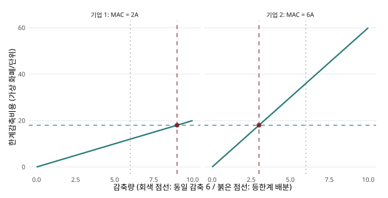
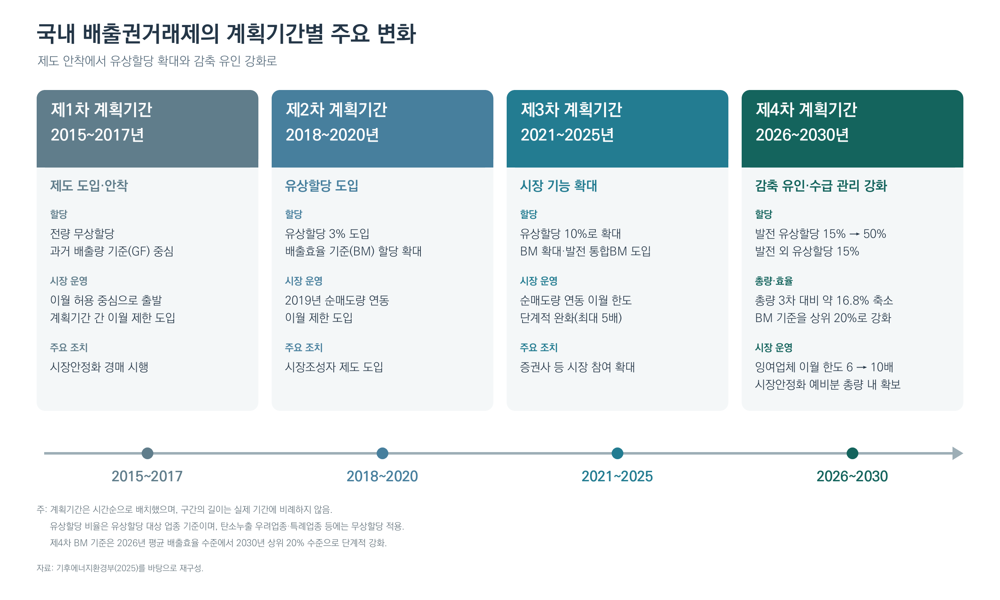
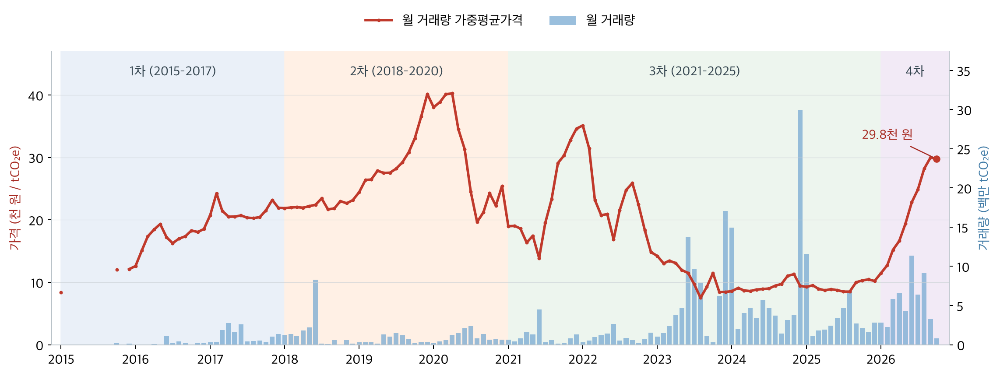
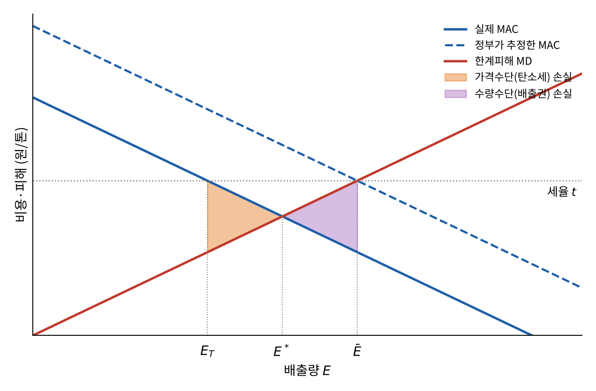
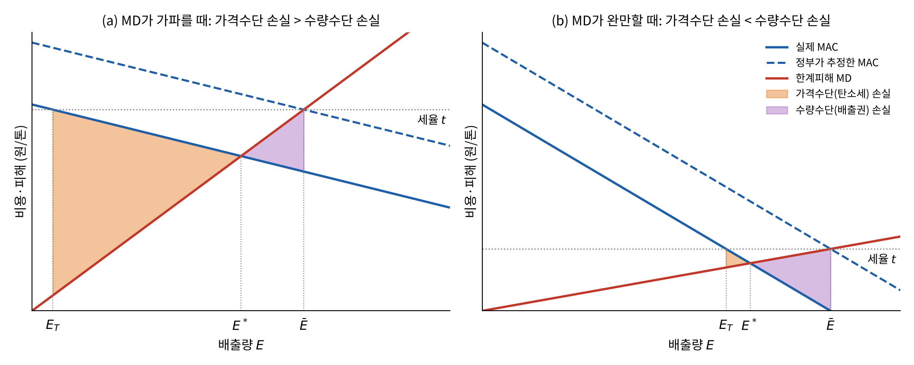
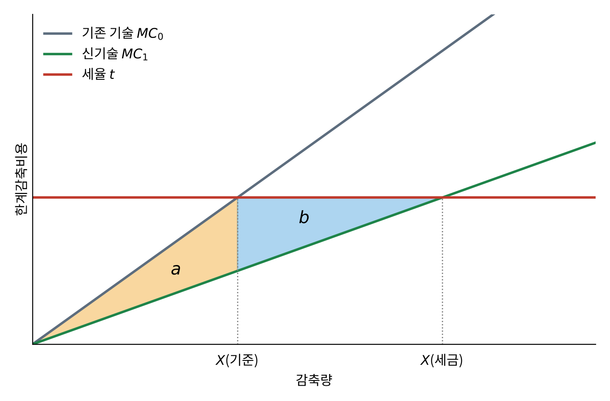
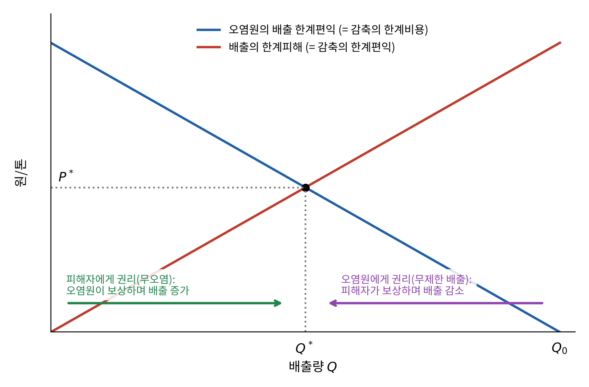
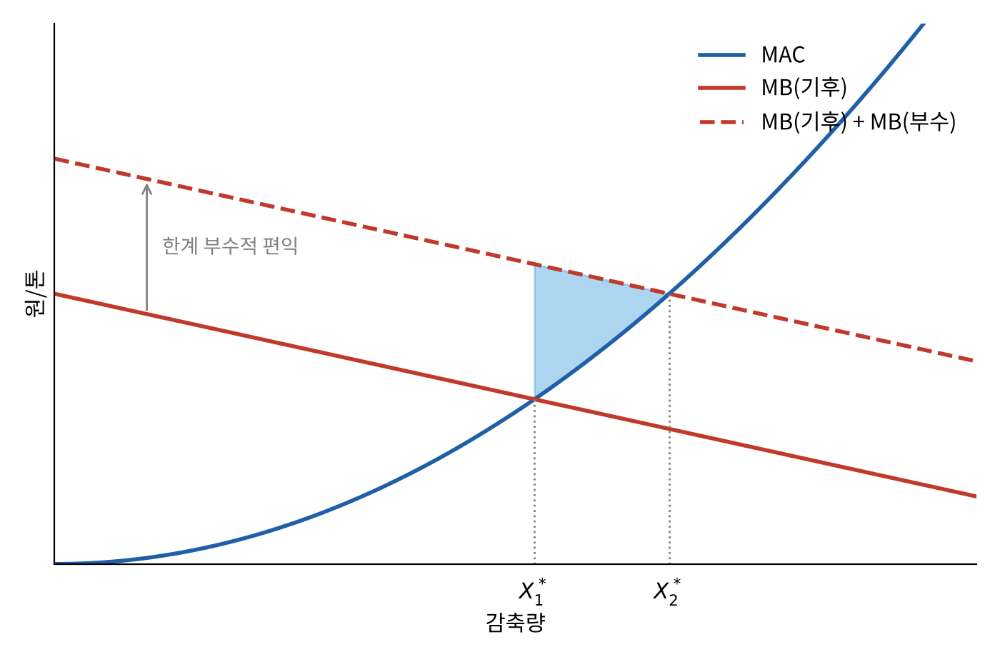

8 기후정책의 수단과 설계
들어가며: 감축을 어떻게 “시킬” 것인가
7장에서는 정부가 한계감축비용(MAC)과 한계피해(MD)가 같아지는 곳에서 감축량을 정한다고 가정했다. 그런데 정부가 “몇 톤 줄이는 것이 최적”이라는 답을 알아도, 실제로 배출하는 것은 수많은 기업과 가계다. 이들이 사회적으로 바람직한 만큼 배출을 줄이게 하려면 어떤 제도가 필요할까? 이 장은 그 집행의 문제를 다룬다.
| 절 | 질문 |
|---|---|
| I. 직접규제 | 정부가 무엇을, 어떻게 할지 직접 지시하면 어떻게 되는가? |
| II. 탄소세 | 배출에 가격을 매기면(피구세·보조금) 어떻게 되는가? |
| III. 배출권거래제 | 총량을 정하고 거래를 허용하면 어떻게 되는가? 한국은 어떻게 운영하는가? |
| IV. 가격 vs. 수량 | 감축비용을 정확히 모를 때 어느 방법이 더 안전한가(바이츠만 정리)? |
| V. 혁신·배분·세수 | 장기적인 기술혁신, 배출권을 처음 누구에게 줄지, 걷은 돈을 어디에 쓸지 |
왜 정부 개입이 정당화되는가
3장에서 배운 후생경제학 제1정리는 경쟁시장의 균형이 일정한 조건 아래 파레토 최적이라고 말한다. 이 정리는 흔히 “정부는 시장을 가만히 내버려 두어야 한다”는 주장의 근거로 쓰인다. 그러나 제1정리에는 외부효과가 없다는 전제가 있다. 온실가스 배출은 대표적인 외부효과다(4장). 외부효과가 있으면 시장균형은 더 이상 파레토 최적이 아니며, 이것이 시장실패다. 이 경우 정부의 개입은 후생을 개선할 수 있고, 따라서 정당화된다.
후생경제학 제2정리도 이 장에서 쓸모가 있다. 자원이 처음에 적절히 분배되어 있다면 어떤 파레토 최적도 경쟁시장을 통해 달성할 수 있다는 정리다. 이는 효율성(시장이 해결)과 분배(초기 배분이 결정)를 분리해 다룰 수 있다는 근거가 된다. 뒤에서 배출권을 누구에게 처음 나누어 줄지 다룰 때 이 생각이 다시 등장한다.
그러므로 이 장의 질문은 “개입할 것인가”가 아니라 “어떤 수단으로 개입할 것인가”다.
정책수단의 분류
정책수단은 크게 두 무리로 나눌 수 있다.
| 시장기반 수단(market-based) | 직접규제(command-and-control) |
|---|---|
| 당사자 간 직접 협상(4장의 코즈 정리) | 기술 규제(technology control) |
| 세금·보조금 | 배출량·피해 통제(output/damage control) |
| 거래 가능한 배출권(tradable permits) | 법적 책임(liability) |
두 무리의 핵심 차이는 누가 결정하느냐다. 시장기반 수단은 “얼마나, 어떻게 줄일지”를 오염원이 스스로 선택하게 한다. 직접규제는 정부가 “무엇을, 어떻게” 할지 직접 지시한다. 이 차이가 이 장의 모든 비교를 관통한다.
직접규제
직접규제는 가장 흔한 형태의 환경정책이며, 특히 정책입안자에게 인기가 높다. 명령과 통제(command and control)라고도 부르는데, 정부가 사람과 기업에게 무엇을 하고 하지 말지, 어떻게 하고 하지 말지 지시하는 방식이기 때문이다. 연비 기준, 발전소의 황산화물(SO₂) 배출 한도가 대표적인 예다.
직접규제는 대상에 따라 여러 유형이 있다.
- 투입·기술 규제: 무연 휘발유 의무화, 촉매변환기 장착 의무, 연비 기준.
- 산출·성능 규제: 발전소 SO₂ 배출 한도, 유아용품의 발암물질 금지.
- 제품 규제: 특정 성분이나 구조의 요건.
- 시간·장소 규제: 심야 비행 금지, 자연보호구역 내 건축 금지, 프레온가스(CFC) 전면 금지.
이 가운데 특히 구분해야 할 것은 기술기준과 성능기준이다. 기술기준은 특정 설비나 기술(예: 탈황설비 설치)을 쓰라고 정한다. 성능기준은 산출량당 배출 한도만 정하고 방법은 기업이 고르게 한다. 성능기준이 더 유연하지만, 산출량당 기준이라면 생산이 늘 때 총배출도 늘 수 있다는 한계가 있다.
직접규제가 제대로 작동하려면 규제자가 규제 대상 활동을 자세히 알아야 합리적인 지시를 내릴 수 있다. 따라서 행위자나 사용 기술의 수가 적을 때 잘 작동한다. 배출원과 감축기술이 매우 다양한 온실가스에는 직접규제가 적합하지 않은 경우가 많다.
그렇다고 직접규제가 언제나 열등한 것은 아니다. 직접규제가 더 나은 경우도 있다.
- 기업들의 감축기술이 거의 같아서 거래의 이득이 작은 경우.
- 오염원이 매우 많고 작아서 배출을 일일이 측정하는 감시 비용이 과도한 경우.
- 빠른 위험 억제가 필요하거나 최소 안전기준이 중요한 경우.
기후 분야에서 직접규제가 쓰이는 예로는 자동차 연비 기준, 건물 에너지 기준, 메탄 누출 규제가 있다. 다만 이것이 시장기반 수단보다 반드시 나은 것은 아니다.
시장기반 수단
시장기반 수단은 유인부합적(incentive-compatible) 수단이라고도 하며 직접규제의 주된 대안이다. 가장 오래된 것은 세금과 보조금이다.
단기에는 보조금을 세금의 단순한 반대로 볼 수 있다. 배출 한 톤에 1만 원의 세금을 매기든, 한 톤 줄일 때마다 1만 원의 보조금을 주든, 기업이 한 톤 더 줄일 때 얻는 이득은 1만 원으로 같다. 내지 않아도 되는 세금은 감축에 대한 보상과 같기 때문이다. 그러나 두 수단의 분배 효과는 다르다.
- 세금은 오염자 부담 원칙(polluter pays principle)을 따른다. 돈이 가계와 기업에서 정부로 이동한다.
- 보조금은 피해자 부담 원칙(victim pays principle)을 따른다. 돈이 정부(결국 납세자)에서 가계와 기업으로 이동한다.
장기에는 배출량에 미치는 효과도 다르다. 세금은 과세 산업의 평균 생산비용을 높여 배출 산업이 세금이 없을 때보다 축소된다. 반대로 감축 보조금은 그 부문의 평균 사업비용을 낮춰 추가 투자가 유입되고 배출 부문이 확대된다. 결론적으로, 장기적으로 보조금은 세금에 비해 총배출량을 늘린다.
배출권(tradable permits)은 비교적 최근의 시장기반 수단이다. 규제자가 배출 총량 상한(cap)을 정하고, 총량을 단위로 나누어 각 배출원에 배출권을 준다. 배출권이 부족한 기업은 남는 기업에게서 살 수 있다. 이렇게 배출권 시장에서 형성된 가격은 세금과 똑같이 작동한다.
시장기반 수단의 핵심 장점은 규제자가 배출을 어떻게 줄일지 정하지 않는다는 데 있다. 그 결정은 자기 비용을 가장 잘 아는 가계와 기업에 맡겨진다.
어떤 수단이 “최선”인가: 네 가지 기준
정책수단을 비교할 때는 다음 네 가지 기준을 쓴다 (Keohane 와/과 Olmstead 2016년; Tol 2023년).
- 환경 효과성(environmental effectiveness): 목표한 배출량이나 농도를 실제로 달성하는가?
- 정태적 비용효과성(static cost-effectiveness): 주어진 목표를 최소 비용으로 달성하는가?
- 동태적 비용효과성(dynamic cost-effectiveness): 시간이 지나면서 더 나은 감축기술을 개발할 혁신 유인을 주는가?
- 정치적 수용성(political acceptability): 오염원과 유권자가 받아들일 수 있는가?
예를 들어 배출권거래제는 총량이 고정되어 있으므로, 감시와 집행이 제대로 된다면 환경 효과성이 가장 확실하다. 반면 탄소세는 기업들이 얼마나 반응할지(MAC)를 정확히 모르면 목표 배출량을 맞추지 못할 수 있다. 이 문제는 IV절에서 자세히 다룬다. 한 기준에서 유리한 수단이 다른 모든 기준에서도 우월한 것은 아니다.
비용효과성과 등한계 원칙
사회계획자의 문제
모든 것을 아는 사회계획자가 목표 배출량 \(\bar E\)를 최소 비용으로 달성하려 한다고 하자. 기업 \(i\)의 규제 이전 배출량을 \(e_{i0}\), 규제 이후 배출량을 \(e_i\)라 하면 감축량은 \(e_{i0}-e_i\)이고, 감축비용은 \(C_i(e_{i0}-e_i)\)다. 사회계획자의 문제는
\[ \min_{e_i}\; \sum_i C_i(e_{i0}-e_i)\quad\text{s.t.}\quad \sum_i e_i\leq \bar E \]
이다. 여기서 \(C_i(e_{i0}-e_i)\)는 \(C_i\)와 \((e_{i0}-e_i)\)의 곱이 아니라, 함수 \(C_i(\cdot)\)에 감축량을 넣은 값이라는 점에 주의하자.
라그랑지안을 세우면
\[ \mathcal{L}=\sum_i C_i(e_{i0}-e_i)-\lambda\Big(\bar E-\sum_i e_i\Big) \]
이고, \(e_i\)에 대한 1계 조건은 \(-C_i'(e_{i0}-e_i)+\lambda=0\), 즉
\[ \boxed{C_1'=C_2'=\cdots=C_i'=\lambda\quad \forall i} \]
이다. 모든 오염원이 같은 한계감축비용에서 감축할 때 주어진 총감축을 가장 싸게 달성한다. 이것이 3장과 6장에서 만난 등한계 원칙(equimarginal principle)이다. 라그랑주 승수 \(\lambda\)는 배출 제약을 한 단위 완화할 때 절약되는 비용, 즉 배출 한 톤의 그림자가격이다.
직관은 간단하다. 기업 A의 한계비용이 기업 B보다 낮다면, A가 한 단위 더 줄이고 B가 한 단위 덜 줄여도 총감축량은 같지만 총비용은 낮아진다. 한계비용이 같아질 때까지 이 재분배는 계속 이득이 된다. 뒤에서 확인하겠지만, 이 조건을 저절로 만족시키는 정책이 피구세와 배출권거래제다.
직접규제는 왜 비용효과적이지 않은가
두 기업에 똑같은 배출기준을 부과하는 경우를 생각하자. 직접규제의 전형적인 모습이다. 두 기업의 MAC가 다르다면, 같은 기준은 한 기업에게는 너무 느슨하고 다른 기업에게는 너무 빡빡하다.

그림의 면적으로 정리하면 다음과 같다. 가로축에 정해진 총감축량을 놓고, 기업 1의 감축량은 왼쪽 끝 \(O_1\)부터, 기업 2의 감축량은 오른쪽 끝 \(O_2\)부터 잰다. 같은 기준 \(\bar e_1=\bar e_2\)일 때와 등한계 배분 \(e_1^*, e_2^*\)일 때 각 기업의 총감축비용(MAC 아래 면적)을 영역 \(a,b,c,d,e\)로 나타내면,
| 같은 기준 | 등한계 | |
|---|---|---|
| 기업 1 (MAC 낮음) | \(e\) | \(e+c\) |
| 기업 2 (MAC 높음) | \(a+b+c+d\) | \(d\) |
| 합계 | \(a+b+c+d+e\) | \(c+d+e\) |
등한계 배분은 세율이나 배출권 가격 \(p^*\) 하나로 달성된다. 배출권거래제라면 기업 1이 더 감축해 배출권을 팔아 \(b\)만큼, 기업 2는 덜 감축하고 배출권을 사서 \(a\)만큼 이득을 본다. 정부가 직접규제로 이 결과를 얻으려면 모든 기업의 MAC를 정확히 알아야 하는데, 이는 현실적으로 불가능하다.
숫자로 보는 등한계 원칙 위반
등한계 원칙의 위반이 얼마나 클 수 있는지 보여주는 유명한 연구가 있다. 비스쿠시(Viscusi, 1996)는 미국의 안전·환경 규제들을 “통계적 생명 한 명을 구하는 데 드는 비용”으로 환산해 비교했다.
| 규제 | 통계적 생명 1명당 비용 |
|---|---|
| 무통풍 실내난방기 규제 | 약 10만 달러 |
| 자동차 에어백·안전띠 규제 | 수백만 달러 |
| 석면 규제 | 수천만~수억 달러 |
| 작업장 포름알데히드 규제 | 약 720억 달러 |
가장 싼 규제와 가장 비싼 규제의 비용이 약 70만 배 차이 난다. 같은 돈을 포름알데히드 규제 대신 에어백 규제를 강화하는 데 썼다면 훨씬 많은 생명을 구할 수 있었다. 각 규제가 개별적·비조율적으로 결정되기 때문에 생기는 비효율이며, 바로 등한계 원칙의 위반이다.
탄소세와 보조금
피구세
외부효과는 사적 비용·편익과 사회적 비용·편익의 괴리 때문에 비효율을 낳는다. 음의 외부효과에는 세금으로 사적 한계비용을 높이고(또는 감축에 보조금을 주고), 양의 외부효과에는 보조금으로 사적 한계비용을 낮춘다. 세율이 외부효과의 한계피해(MD)와 같을 때 이 세금을 피구세(Pigouvian tax)라 부른다 (Pigou 1920년). 4장에서 배운 바로 그것이다.
배출 한 단위당 세금 \(t\)를 부과하면 기업은 감축비용과 세금의 합을 최소화한다.
\[ \min_{e_i}\; C_i(e_{i0}-e_i)+t\,e_i \quad\Longrightarrow\quad C_i'(e_{i0}-e_i)=t\quad\forall i \]
모든 기업이 같은 세율 \(t\)를 마주하므로, 각자 자신의 한계감축비용이 \(t\)와 같아지는 지점에서 스스로 감축을 멈춘다. 그 결과 정부가 개별 기업의 MAC를 몰라도 전체적으로 \(C_1'=C_2'=\cdots=t\), 즉 등한계 원칙이 저절로 성립한다. 이것이 탄소세의 가장 중요한 장점이다.
다만 공통 세율은 주어진 총감축을 가장 싸게 달성하게 할 뿐이다. 그 세율이 유도하는 총감축량이 사회적으로 바람직한지는 7장처럼 피해와 비용을 비교해야 한다. 아무 세율이나 매겼다고 피구세가 되는 것은 아니다.
보조금: 세금과 무엇이 다른가
경제학자들은 보통 세금 같은 시장기반 수단을 선호한다. 보조금은 “음(−)의 세금”이다. 정치적으로는 인기가 많다. 기업은 보조금을 환영한다. 그러나 효율성 측면에서는 덜 바람직하다.
- 보조금 재원은 다른 세금으로 마련해야 하는데, 그 세금은 경제를 왜곡한다.
- 일단 시작하면 정치적으로 중단하기 어렵다.
- 앞에서 보았듯이 장기적으로 보조금은 해당 산업의 평균비용을 낮춰 오염 산업 자체를 키우는 역설을 낳을 수 있다.
예를 들어 천연펄프로 종이를 만드는 공장에 오염을 줄인 만큼 보조금을 준다고 하자. 각 공장은 오염을 덜 배출하지만, 세금을 매길 때보다 천연펄프 종이가 상대적으로 싸져 재생종이보다 많이 쓰이게 된다. 그 결과 산업 전체의 벌목과 오염은 세금을 쓸 때보다 많아질 수 있다.
물론 모든 보조금이 나쁜 것은 아니다. 연구개발의 지식 파급효과나 신생 기술의 자금 제약처럼 다른 시장실패를 겨냥한 보조금은 탄소가격을 보완할 수 있다. 보조금이 어떤 행동을 보상하고 어떤 시장실패를 해결하려는지 구체적으로 밝혀야 한다.
제3의 수단: 법적 책임
세금이나 배출권과 달리 법적 책임(liability)은 기업에게 사전에 규제를 가하지 않는다. 대신 “사고가 나면 책임지라”는 사후적 유인을 준다.
과실책임 원칙(negligence rule)을 생각해 보자. 기업은 오염 저감이나 안전조치 같은 예방 수준 \(x\)를 스스로 정한다. 예방비용 \(C(x)\)는 \(x\)와 함께 증가하고, 기대피해 \(D(x)\)는 감소한다. 사회적으로 효율적인 예방 수준은 예방의 한계비용과 예방으로 줄어드는 한계피해가 같아지는 곳, 즉 \(\mathrm{MC}(x^*)=-\mathrm{MD}(x^*)\)다. 규제는 단순하다. “원하는 대로 하라. 다만 \(x^*\) 이상으로 예방하지 않았는데 사고가 나면 피해 전액을 배상하라.” 그러면 기업은 스스로 \(x^*\)를 선택한다.
법적 책임은 정부가 매 순간 배출량을 측정하고 가격을 매길 필요가 없다는 장점이 있다. 사고나 소송이 일어났을 때만 작동한다. 그러나 이것이 단점이기도 하다. 기후피해는 수많은 배출원에서 나온 온실가스가 국경을 넘어 오랜 시간에 걸쳐 일으키므로, 특정 피해를 특정 배출자와 연결하고 인과관계를 입증하기가 매우 어렵다. 5장에서 본 기후소송이 늘고 있지만, 배상제도가 탄소가격처럼 작동한다고 가정할 수는 없다.
차선의 규제
지금까지는 시장이 경쟁적이고 정부가 선한 의도만 가진다고 가정했다. 이 가정 가운데 하나라도 깨지면 교과서의 피구세는 더 이상 최적이 아니다. 이를 차선(second-best)의 문제라 한다.
배출권거래제
작동 원리
배출권거래제(emissions trading system, ETS)는 총량제한 배출권거래(cap-and-trade)라고도 부른다. 정부가 총배출량에 상한(cap)을 정하고, 그만큼의 배출권을 기업에 나누어 준다. 배출이 할당량보다 많은 기업은 부족분을 여유 있는 기업에게서 구매하고, 배출이 할당량보다 적은 기업은 잉여분을 판매한다. 수량(상한)은 직접규제처럼 정부가 고정하지만, 가격은 시장이 정한다는 점에서 두 세계의 특징을 결합한 제도다.
운영 절차는 다음과 같다.
- 규제자가 (최적) 총배출량 \(E^*\)를 결정한다.
- 거래소 같은 거래 제도를 설립한다.
- 배출권을 초기 할당하여 시장을 연다(\(\sum_i E_i=E^*\)).
- 배출권 거래가 시작된다.
이 모든 것은 배출권을 보유한 경우에만 배출을 허용하는 법적 장치를 전제로 한다. 기업은 매년 배출량을 측정·보고하고 검증받은 뒤, 그만큼의 배출권을 정부에 제출한다.
기업 \(i\)에게는 세 가지 선택이 있다. 할당받은 배출권 \(E_i\)만큼 배출을 줄이거나, 덜 줄이고 부족분을 구매하거나, 더 줄이고 남는 배출권을 판매하는 것이다. 어느 쪽을 고를지는 자신의 한계감축비용과 배출권 가격 \(p\)의 비교로 결정된다.
배출권의 비용효과성
기업 \(i\)가 배출권 \(E_i\)를 보유하고 실제로 \(e_i\)를 배출한다면 총비용은
\[ TC_i=C_i(e_{i0}-e_i)+p\,(e_i-E_i) \]
다. 배출권이 부족하면(\(e_i>E_i\)) 사서 메우고, 남으면 팔아서 수입을 얻는다. 비용 최소화의 1계 조건은
\[ C_i'(e_{i0}-e_i)=p\quad\forall i \]
이다. 시장균형에서는 \(\sum_i e_i=\sum_i E_i=E^*\)이고, 모든 기업의 한계비용이 같은 시장가격 \(p\)로 수렴한다. 탄소세와 똑같이 등한계 원칙이 저절로 성립한다. 한계비용이 낮은 기업은 많이 줄여서 배출권을 팔고, 높은 기업은 배출권을 산다. 그 결과 “싼 감축부터” 이루어진다.
배출권거래제의 장점을 정리하면 다음과 같다.
- 배출권이라는 시장을 만들어 외부효과를 내재화한다.
- 총배출량을 직접 통제한다. 세금보다 환경 효과성이 확실하다.
- 모든 기업의 MAC를 공통 거래가격으로 같게 만든다.
- 감축 방법의 선택은 기업 자율에 맡겨 산업 간 이질성을 자연스럽게 수용한다.
- 완전경쟁이라면 초기 배분과 관계없이 비용효과적이다. 배분은 형평성에만 영향을 준다(뒤의 ‘초기 배분’ 절). 다만 시장지배력을 가진 대기업은 배출권을 쥐고 팔지 않아 가격을 올릴 수 있다.
정보 요구량에 대해서는 주의가 필요하다. “정해진 감축목표를 싸게 달성”하는 것만 원한다면 정부가 알아야 할 것이 적다. 그러나 목표 자체를 사회적 최적(MAC = MD)에 맞추려면, 세금과 마찬가지로 비용과 피해에 대한 많은 정보가 필요하다.
배출권거래제에 비해 탄소세가 갖는 장점
탄소세와 배출권거래제는 둘 다 탄소에 가격을 매기는 수단이다. 최소비용 감축이라는 효율성도, “돈을 내고 오염할 권리를 산다”는 대중의 반발도 공통이다. 그럼에도 핀딕(Pindyck, 2022)은 탄소세가 다음과 같은 장점이 있다고 지적한다 (Pindyck 2022년).
1. 다른 정책과 함께 써도 추가 감축 효과가 유지된다. 배출 상한이 20억 톤인 상태에서 재생에너지 의무를 추가한다고 하자. 배출권거래제에서는 총배출이 여전히 20억 톤이다. 비용만 늘어난다. 탄소세에서는 의무만큼 추가 감축이 일어난다.
이를 풍선효과(waterbed effect)라고 한다. 배출권거래제는 총량을 고정한다. 재생에너지 의무로 발전소 배출이 줄면 남는 배출권이 시장에 팔리고, 배출권 가격이 떨어지며, 다른 업종이 그만큼 더 배출한다. 감축이 일어나는 장소만 더 비싼 부문으로 옮겨질 뿐이다. 반면 탄소세는 가격을 고정하므로 다른 업종의 세율이 변하지 않고, 전력 부문의 감축분이 그대로 추가 감축이 된다. EU 배출권거래제(EU ETS)는 남는 배출권을 흡수하고 소각하는 시장안정화예비분(MSR, 2019년~)으로 이 효과를 완화하고 있다.
2. 배출권 배분 문제가 없다. 배출권을 누구에게 얼마나 나눌지에 대한 공정한 기준이 명확하지 않고, 배분은 정치적 압력에 좌우되기 쉽다(예: K-ETS의 높은 무상할당 비율).
3. 제도가 단순하다. 톤당 세율만 정하면 된다.
사례: 한국 배출권거래제(K-ETS)
한국은 2015년 1월 전국 단위의 배출권거래제를 도입했다. 동아시아 최초의 전국 단위 제도다. 제도는 몇 년 단위의 계획기간으로 운영되며, 계획기간마다 할당 방식과 시장 운영 규칙이 바뀌어 왔다.

그림 8.2 의 흐름을 요약하면, 제1차 계획기간(2015-2017)에는 전량 무상할당으로 제도를 안착시키는 데 집중했다. 제2차(2018-2020)에 유상할당 3%를 도입하고, 제3차(2021-2025)에는 유상할당을 10%로 늘리고 증권사 등 시장 참여자를 확대했다. 제4차(2026-2030)에는 발전 부문의 유상할당을 15%에서 2030년 50%까지 단계적으로 늘리고, 총량을 3차 대비 약 16.8% 축소하며, 총량 안에 시장안정화 예비분을 확보한다.

그림 8.3 를 보면, 2015년 시장 개설 이후 제2차 계획기간에 가격이 톤당 4만 원 가까이 올랐으나, 제3차 계획기간에는 한때 1만 원 아래로 떨어졌다. 할당이 넉넉해 잉여배출권이 많았고, 그 결과 감축 유인이 약해졌다는 평가를 받았다. 제4차 계획기간이 시작된 2026년에는 가격이 다시 빠르게 올라, 2026년 10월 13일 KAU26 종가는 톤당 30,350원이었다.
다른 나라의 배출권시장: 세 가지 성적표
같은 “배출권거래제”라는 이름 아래에서도 성패가 갈린다.
| 제도 | 개요 | 평가 |
|---|---|---|
| 미국 SO₂ 거래제(1990~) | 산성비 대응, 발전 부문 | 대체로 성공 |
| RECLAIM(로스앤젤레스) | 도심 대기오염물질 거래 | 성공적이지 못함 |
| EU ETS 1·2기(~2012) | 교토의정서 이행 | 평가 엇갈림 |
총량(cap)이 얼마나 엄격한지, 무상할당과 유상할당의 비율, 감시·집행 역량이 실제 성과를 가른다. K-ETS의 낮은 가격도 이 스펙트럼 어딘가에 있다.
감시·집행과 국제적 연계
배출을 측정해야 가격을 매길 수 있다
가격을 매기려면 배출을 측정해야 한다. 측정·보고·검증(MRV: measurement, reporting, verification)은 정책의 부수적인 행정절차가 아니라 “배출 한 톤”이 무엇을 뜻하는지 정하는 기반이다.
모든 배출을 매번 감시할 수는 없다. 그래서 규제자는 확률 \(\pi\)로 점검하고, 적발 시 톤당 벌금 \(f\)를 매긴다. 기업이 마주하는 톤당 기대 비용은 \(\pi f\)다. 따라서 \(\pi f=\mathrm{MD}\)가 되도록 정하면 피구세와 같은 유인을 줄 수 있다. 예를 들어 점검 확률이 1/2이라면 벌금을 세율의 2배로 정하면 된다. 또 위반 기업을 더 자주 점검하면 감시 비용을 아낄 수 있다.
누구에게 의무를 지울지도 중요한 설계 선택이다.
- 상류(upstream): 화석연료 생산·수입업체. 대상이 적어 감시가 쉽다.
- 중류(midstream): 발전소·공장. EU ETS(약 1만 1천 개 시설)와 K-ETS가 이 방식이다.
- 하류(downstream): 가구·차량. 대상이 수백만이라 감시 비용이 과도하다.
현실의 집행 수준은 제도마다 크게 다르다. 미국 SO₂ 거래제는 굴뚝 연속측정 장비를 의무화하고 톤당 2,000달러(배출권 가격의 수 배)의 벌금을 매겨 준수율이 사실상 100%였다. EU ETS는 초기에 부가가치세 사기와 배출권 등록부 해킹 사건으로 거래가 일시 중단되기도 했고, 회원국마다 집행 역량이 달랐다. 중국은 배출 통계의 불일치가 30%를 넘는 문제 때문에 총량이 아닌 배출 원단위(산출량당 배출) 기준으로 제도를 운영한다.
국가 간 연계와 상쇄배출권
배출권시장의 연계(linking). 두 시장이 서로의 배출권을 인정하면 공통 가격이 형성되고, 연계 지역 전체에서 등한계 원칙이 성립해 총비용이 줄어든다. 캘리포니아-퀘벡(2014), EU-스위스(2020)가 그 예다. 그러나 위험도 있다. 집행 수준이 가장 약한 참여국에 맞춰질 수 있고, 한쪽의 초과 할당이나 가격 상한이 전체로 전이된다. 단위가 같다고 해서 서로 다른 규칙으로 발행된 배출권이 같은 환경적 가치를 갖는 것은 아니다.
상쇄배출권(offset). 제도 바깥의 감축이나 제거를 인정하여 제도 안의 의무 이행에 사용하게 하는 것이다. 대표적인 예가 교토의정서의 청정개발체제(CDM)다. 개발도상국의 감축사업에서 나온 감축분을 인증(CER)하여 선진국이 의무 이행에 쓸 수 있게 했다.
문제는 감축분이 “사업이 없었다면 배출했을 양(가정) − 실제 배출”로 계산된다는 데 있다. 가정된 기준선은 관측할 수 없으므로, 그 사업이 정말로 추가적인 감축을 만들었는지(추가성, additionality) 확인하기 어렵다. 냉매 생산의 부산물인 HFC-23을 파괴하는 사업은 감축비용이 매우 싸서, 크레디트 판매 수입을 노리고 공장을 새로 세우는 일까지 벌어졌다. 결국 공급 과잉으로 CER 가격이 폭락했다. 같은 문제는 파리협정 6조의 국가 간 감축실적 이전과 K-ETS의 외부사업 상쇄에도 그대로 적용된다. 추가성, 기준선, 다른 지역으로의 배출 이동(누출, leakage), 저장의 영속성, 이중계산 방지가 관건이다.
가격 수단 vs. 수량 수단
확실성 아래에서는 같다
배출권거래제에서는 배출량은 알지만 비용은 모른다. 상한은 정해져 있지만 그것을 지키는 데 드는 비용(배출권 가격)은 시장이 찾아낸다. 탄소세에서는 한계비용(세율)은 알지만 배출량은 모른다. 가격은 정해져 있지만 기업들이 얼마나 줄일지는 지켜보아야 안다.
정부가 MAC 곡선을 정확히 안다면 두 수단은 완전히 동등하다.
\[ t=C_i'(e_{i0}-e_i)=p\quad\forall i \]
적절한 세율 \(t^*\)를 고르는 것과 적절한 총량 \(E^*\)를 고르는 것은 같은 결과를 낳는다. 문제는 현실에서 정부가 기업들의 MAC를 정확히 모른다는 것이다. 그 불확실성 속에서 두 수단은 더 이상 같지 않다. 이것이 바이츠만(Martin Weitzman)의 “가격 대 수량” 분석이다 (Weitzman 1974년).
정부가 비용을 과대평가했다면
정부가 실제 한계감축비용보다 더 비싸다고 착각하고 정책을 설계했다고 하자. 정부는 추정한 MAC와 MD의 교점에서 세율 \(t\)와 상한 \(\bar E\)를 정하지만, 기업은 실제 MAC에 따라 반응한다.
- 수량 수단(배출권): 감축이 비싸다고 생각했으므로 상한을 느슨하게(너무 많이) 정한다. 과소규제다. 오염원은 이득을 보지만 사회는 순손실을 본다.
- 가격 수단(탄소세): 감축이 비싸다고 생각했으므로 세율을 높게 매긴다. 실제 감축비용은 더 싸므로 기업은 예상보다 많이 줄인다. 과다규제다. 환경은 이득을 보지만(과잉감축) 사회는 순손실을 본다.

두 경우 모두 틀린 추정은 피할 수 없다. 질문은 “어느 쪽 실수의 대가가 더 작은가”다.
한계피해의 기울기가 답을 가른다
그림 8.5 는 같은 추정 오류에서 MD의 기울기만 바꾼 것이다.

- MD가 가파를 때: 배출량이 조금만 어긋나도 피해가 급변한다. 따라서 수량을 맞추는 것이 중요하다. MAC를 잘못 추정해도 MD와의 교점에서 배출량은 크게 변하지 않으므로 상한 \(\bar E\)는 \(E^*\)에 가깝다. 그러나 교점의 가격은 크게 달라지므로 세율 \(t\)는 많이 빗나간다.
- MD가 완만할 때: 한 톤의 피해가 배출량과 관계없이 거의 일정하다. 따라서 가격을 맞추는 것이 중요하다. MAC를 잘못 추정해도 교점의 가격은 거의 그대로이므로 세율 \(t\)는 정답에 가깝지만, 교점의 배출량은 크게 달라져 상한 \(\bar E\)가 많이 빗나간다.
바이츠만 정리
이를 일반화한 것이 바이츠만 정리다.
감축의 한계편익(MB) 곡선이 한계비용(MAC) 곡선보다 더 가파르면, 수량 수단의 실수가 가격 수단의 실수보다 후생손실이 작다. 반대로 MB가 MAC보다 더 완만하면, 가격 수단의 실수가 후생손실이 작다.
| 상대적으로 더 가파른 곡선 | 더 유리한 수단 | 이유 |
|---|---|---|
| MB(= MD)가 가파름 | 수량(배출권) | 감축량 오차를 억제하는 것이 중요 |
| MAC가 가파름 | 가격(세금) | 급격한 비용 상승을 피하는 것이 중요 |
주의할 점이 있다. 표준 모형에서 수단 선택을 가르는 것은 감축비용(MAC)의 불확실성이다. 한계편익(MB)의 불확실성은 수단 선택과 무관하다. 기업은 MB가 아니라 세율이나 배출권 가격에 반응하므로, 정부가 MB를 잘못 알면 두 수단이 똑같이 틀린 배출량을 낳기 때문이다. 다만 이는 국소적인 선형·이차 근사와 비용 충격에 관한 표준 가정 아래의 결과다. 비용과 편익의 충격이 함께 움직이거나, 비선형적 임계점이나 여러 시점의 제약이 중요하면 비교가 달라진다.
기후변화에 적용하면: 왜 탄소세가 유리한가
기후변화는 배출의 유량(flow)이 아니라 대기 중에 누적된 저량(stock)에 의해 좌우된다(7장). 한 해의 배출은 대기 중 저량의 작은 일부이므로, 한 해의 배출량이 예상보다 조금 많거나 적어도 한 톤의 한계피해는 크게 달라지지 않는다. 즉 연간 배출량 기준의 MD 곡선은 매우 완만하다.
바이츠만 정리에 따르면, MD가 완만한 저량 오염물질에서는 가격 수단(탄소세)의 실수가 수량 수단(배출권)의 실수보다 비용이 작다. 이것이 많은 경제학자들이 기후정책에서 탄소세를 선호하는 이론적 근거 가운데 하나다.
그러나 네 가지 평가기준의 나머지까지 고려하면 결론이 달라질 수 있다.
- 정치 현실: 국가 간 탄소세율을 조정하는 것은 정치적으로 거의 불가능하다. 현실에서는 배출권거래제가 주류다.
- 경기순응성: 배출권 가격은 불황에 떨어져 기업 부담을 자동으로 덜어 준다. EU ETS가 정치적으로 살아남은 이유 가운데 하나다.
- 누적 예산과 임계점: 1.5°C나 2°C 같은 누적 탄소예산이나 기후체계의 임계점(9장)을 중시하면 수량 통제의 가치가 커진다.
기술혁신과 동태적 효율성
혁신은 어디서 오는가
기술 변화는 세 단계로 나누어 볼 수 있다.
| 단계 | 누가 하나 | 동기 |
|---|---|---|
| 발명(invention) | 대학·연구소 | 명예·호기심 |
| 혁신(innovation) | 기업 연구소 | 이윤 |
| 확산(diffusion) | 사업가 | 꾸준한 수익 |
기후 기술정책은 혁신 단계에 집중하는 것이 좋다. 탈탄소화는 완전히 새로운 발명보다는, 이미 알고 있는 대안(태양광, 배터리, 히트펌프 등)을 실용화하고 경쟁력 있게 만드는 문제에 가깝기 때문이다.
혁신 투자에는 “규제가 앞으로도 계속된다”는 믿음이 필요하다. 이 점에서도 탄소세가 유리하다. 세금은 좀처럼 폐지되지 않지만, 보조금은 단명하기 쉽고, 배출권 가격은 변동이 크며, 직접규제는 목표 이상으로 줄일 유인을 주지 않는다. 예측가능성에서 탄소세가 앞선다.
혁신을 직접 촉진하는 수단도 있다.
- 특허: 일시적인 독점으로 혁신을 보상한다.
- 현상금: 1714년 영국 의회의 경도(longitude) 상금, 오늘날의 X 프라이즈 같은 것이다.
- 사전 구매 약정: 아직 없는 제품을 일정 가격에 사겠다고 미리 약속한다.
- 최고효율 기준제(top runner): 시장에서 가장 효율적인 제품을 몇 년 뒤의 기준으로 삼는다.
다만 정부는 어떤 기술이 유망한지 선별하는 데 서툴다는 점을 기억해야 한다. 탄소가격은 기술을 고르지 않고 모든 감축 방법에 같은 보상을 준다는 장점이 있다. 반면 연구개발의 지식 파급효과나 전력망 같은 기반시설의 조정 문제는 탄소가격만으로 해결되지 않으므로, 연구개발 지원 등이 탄소가격을 보완할 수 있다.
기술 도입 유인: 탄소세 > 배출권 > 배출기준
기업이 감축비용을 낮추는 신기술을 도입할지 결정한다고 하자. 그 유인은 정책수단에 따라 다르다.

| 배출기준 | 탄소세 | |
|---|---|---|
| 도입 전 감축량 | \(X\)(기준) | \(X\)(기준) |
| 도입 후 감축량 | \(X\)(기준) 그대로 | \(X\)(세금)로 증가 |
| ① 같은 감축량을 더 싸게 | \(a\) | \(a\) |
| ② 추가 감축: 아낀 세금 − 추가 감축비용 | 없음 | \(b\) |
| 도입 이득 합계 | \(a\) | \(a+b\) |
- 배출기준: 정해진 양만 줄이면 끝이다. 신기술은 같은 양을 더 싸게 줄이는 수단일 뿐이며, 더 줄여도 보상이 없다.
- 탄소세: 남은 배출 1톤마다 \(t\)를 계속 낸다. 신기술로 한계비용이 낮아지면 \(MC_1=t\)가 될 때까지 더 줄여 세금도 아낀다. 감축량이 늘어 총감축비용은 오히려 늘 수 있지만, 아낀 세금이 그보다 커서 순이득이 \(a+b\)다.
- 배출권: 한 기업만 신기술을 도입하면 배출권 가격 \(p\)가 그대로이므로 탄소세와 같다(\(a+b\)). 그러나 신기술이 확산되면 감축이 쉬워져 배출권 수요가 줄고 가격 \(p\)가 떨어진다. 추가 감축의 이득 \(b\)가 줄어든다. 그래서 배출권의 혁신 유인은 탄소세보다 작지만 배출기준보다는 크다.
- 기술기준은 특정 기술에 고정되어 있으므로 더 나은 기술을 개발할 유인이 가장 약하다.
톱니효과(ratchet effect)도 있다. 배출기준 아래에서 신기술이 나오면 규제자가 기준을 강화할 수 있다. 그러면 기업은 혁신을 드러내지 않을 유인까지 갖게 된다.
이 순위는 특정 모형의 결과다. 세율과 총량의 향후 조정, 특허, 연구개발 경쟁, 가격 기대를 달리 가정하면 순위가 달라질 수 있다. 특정 조건의 비교를 보편적인 정책 서열로 읽어서는 안 된다.
배출권의 초기 배분
누구에게 먼저 주는가
배출권거래제는 총량을 정한 뒤 그 배출권을 누구에게 처음 나누어 줄지 정해야 한다. 세 가지 방법이 있다.
- 무상할당(grandfathering): 기준연도의 과거 배출량에 비례해 무료로 나누어 준다. 기존 오염원에게 유리하다. 과거에 많이 배출한 기업일수록 더 많이 받으므로 불공정하다는 비판을 받는다.
- 벤치마킹(benchmarking): 업종별 모범 사례(best practice)의 배출 효율을 기준으로 나누어 준다. 효율적인 기업이 상대적으로 유리하다.
- 경매(auction): 시장가격에 판매한다. 분배 효과가 세금과 같으며, 수입을 다른 세금 인하나 피해 보상에 쓸 수 있다.
공짜로 받은 배출권도 공짜가 아니다
무상할당이면 기업의 감축 유인이 약해지지 않을까? 그렇지 않다. 공짜로 받은 배출권도 사용하면 팔 기회를 포기한다. 따라서 무상할당된 배출권으로 배출하더라도 그 배출에는 시장가격만큼의 기회비용이 있다. 할당량이 기업의 현재 선택과 무관하게 고정되어 있다면, 무상할당과 경매의 감축 유인은 같다(앞의 1계 조건 \(C_i'=p\)에 할당량 \(E_i\)가 나타나지 않는다는 점을 확인하라).
그러나 분배는 다르다. 경매 수입은 정부에 돌아가고, 무상할당된 배출권의 가치는 기업에 돌아간다. 또 미래의 할당이 현재의 생산량이나 배출량에 따라 바뀐다면 할당량이 고정되어 있다는 가정이 깨진다. 그러면 기업의 생산·폐쇄·진입 선택까지 영향을 받는다.
초기 배분은 효율성에 영향을 주는가: 코즈 정리의 재등장
이 질문은 4장의 코즈 정리와 같은 구조다 (Coase 1960년). 한 경제주체(예: 4장의 무 재배 농민)는 오염 활동에서 편익을 얻고, 다른 주체(예: 낚시 여행 업체)는 오염으로 피해를 입는다고 하자. 사회계획자라면 오염 활동의 한계편익과 오염의 한계피해가 같아지는 \(Q^*\)에서 오염량을 정할 것이다. 대안으로 규제자가 어느 한쪽에 명시적인 재산권을 주고 시장(협상)을 조직할 수 있다.

- 피해자에게 깨끗한 환경에 대한 권리(오염이 전혀 없을 권리)가 있을 때: 출발점은 \(Q=0\)이다. 배출하려면 오염원이 피해자에게 보상해야 한다. 오염원의 지불의사(파란 선)가 피해자가 요구하는 보상(빨간 선)보다 큰 동안 거래가 이루어져 배출이 늘고, \(Q^*\)에서 두 금액이 같아져 거래가 멈춘다. 돈은 오염원에서 피해자로 흐른다.
- 오염원에게 무제한 배출 권리가 있을 때: 출발점은 규제가 없을 때의 배출량 \(Q_0\)이다. 감축하려면 피해자가 오염원에게 보상해야 한다. 피해자의 지불의사(빨간 선)가 오염원이 요구하는 보상(파란 선)보다 큰 동안 거래가 이루어져 배출이 줄고, 역시 \(Q^*\)에서 멈춘다. 돈은 피해자에서 오염원으로 흐른다.
두 경우 모두 같은 효율적 수량 \(Q^*\)로 수렴한다. 초기 배분은 효율성과 무관하며, 오직 형평성(누가 돈을 내고 누가 받는가)에만 영향을 준다. 이것이 서두에서 본 후생경제학 제2정리의 아이디어이기도 하다.
물론 이 결론은 거래비용, 시장지배력, 자금 제약이 없고 초기 할당이 현재 선택과 무관하다는 조건에 의존한다. 그리고 배분이 효율성과 무관하다는 것은 형평성이 같다는 뜻이 아니다. 배출권을 누가 처음 받는지는 소득과 자산의 분배를 크게 바꾼다.
세수 활용과 이중배당
탄소세나 배출권 경매는 정부에 수입을 가져다준다. 이 돈을 어디에 쓰느냐에 따라 경제적 효과와 정치적 수용성이 크게 달라진다. 6장에서 배운 이론을 다시 떠올려 보자. 세수로 소득세 같은 왜곡적 세금을 낮추면 후생이 개선된다(약한 이중배당). 그러나 환경편익을 빼고도 총비용이 음(−)이 된다(강한 이중배당)는 보장은 없다 (Goulder 1995년).
| 제도(도입) | 세수 사용 | 결과 |
|---|---|---|
| 스웨덴 탄소세(1991) | 소득세 인하를 포함한 세제개편과 함께 도입 | 세율이 세계 최고 수준(톤당 100달러 이상), 수송 배출 약 11% 감소 추정 |
| 독일 생태세제개혁(1999) | 에너지세 세수로 연금보험료율 인하 | 노동비용 감소, 고용 소폭 증가 추정 |
| 브리티시컬럼비아 탄소세(2008) | 세수 중립: 소득세·법인세 인하 + 저소득층 환급 | 연료 소비 5~15% 감소, GDP 악영향 확인 안 됨 |
| 스위스 CO₂ 부담금(2008) | 약 2/3를 가구(1인당 균등)와 기업에 환급 | 장기간 유지 |
| 캐나다 연방 탄소세(2019) | 세수 약 90%를 가구에 정액 환급 | 다수 가구가 순수혜였으나 2025년 소비자 탄소세 폐지 |
| 프랑스 탄소세(2014) | 일반 재정에 흡수, 환급이 잘 보이지 않음 | 2018년 노란조끼 시위 후 추가 인상 동결 |
| 한국 K-ETS(2015) | 유상할당(약 10%) 수입을 기후대응기금으로 | 세금 인하 형태의 환류 없음 |
실증 연구들은 다음을 말해 준다.
- 경제 전체: 유럽의 탄소세 도입국에서 GDP와 고용에 유의한 부정적 효과가 발견되지 않았다(Metcalf & Stock, 2023). 브리티시컬럼비아도 같은 결과를 보였다.
- 강한 이중배당은 드물다: 미국에 대한 추정에서 조세상호작용 효과가 세수 환류 효과보다 커서, 최적 오염세는 한계피해의 약 0.63배였다(Parry, 1995). 대부분의 연구는 약한 이중배당만 성립한다고 본다.
- 환류 방식이 결과를 좌우한다: 같은 세수라도 가장 왜곡이 큰 세금을 낮출 때 이득이 크다. 정액 환급은 형평성에 유리하지만 효율 이득은 작다.
- 정치적 수용성: 프랑스에서는 환급이 있어도 다수가 “손해를 볼 것”이라고 믿었다(Douenne & Fabre, 2022). 캐나다는 정액 환급에도 소비자 탄소세가 폐지되었다. 환류의 가시성과 정부에 대한 신뢰가 관건이다.
세수 환류 효과는 세금이나 경매에서만 생긴다. 무상할당(K-ETS의 약 90%)은 이 이득을 포기하는 선택이다. 경매 비중의 확대와 수입 사용처의 설계가 효율과 수용성을 함께 좌우한다.
정책 성과와 부수적 편익
비용효과적 수단은 실제로 돈을 아낀다: 미국 SO₂ 사례
1990년 미국 산성비 프로그램(SO₂ 배출권거래제)의 실제 비용을 “다른 수단을 썼다면”과 비교한 연구가 있다.
| 정책 수단 | 연간 비용(같은 감축량 기준) |
|---|---|
| 이론상 최소비용 | 3억 1,500만 달러 |
| 실제: 배출권거래제 | 7억 4,700만 달러 |
| 일률적 배출기준 | 9억 달러 (+20%) |
| 기술(탈황설비) 의무화 | 25억 5,500만 달러 (+242%) |
이 장 앞부분의 “직접규제는 왜 비용효과적이지 않은가”가 실제 정책에서 수억 달러 단위로 확인된 사례다. 동시에 실제 거래제의 비용이 이론상 최소비용의 두 배 이상이었다는 점도 눈여겨보자. 거래비용, 주(州) 규제, 기업의 학습 등 현실의 마찰 때문이다. 또 이 프로그램은 2005년 이후 규제 강화와 소송을 거치며 2010년대 초 사실상 기능을 잃었다. 성공한 제도도 영구하지는 않다.
한 오염물질의 경험을 온실가스에 그대로 옮길 수도 없다. 피해의 공간 분포, 연료와 기술, 기존 규제와 시장구조가 다르다. 거래제 도입 전후의 비용 변화를 모두 거래제의 인과효과로 돌려서도 안 된다 (Keohane 와/과 Olmstead 2016년).
부수적 편익: 온실가스와 대기오염의 상호작용
화석연료 연소를 줄이면 기후편익과 함께 미세먼지 같은 지역 대기오염이 줄어 건강 편익이 생긴다. 이를 부수적 편익(co-benefit)이라 한다. 그러나 모든 조치가 온실가스와 대기오염을 같은 방향으로 움직이지는 않는다.
| 조치 | CO₂ | 대기오염(미세먼지·SO₂·NOₓ) |
|---|---|---|
| 석탄 → 가스 발전 | 감소 | 감소 |
| 화석연료 → 재생에너지 | 감소 | 감소 |
| 휘발유차 → 경유차 | 감소 | 증가 |
| 굴뚝 탈황설비 설치 | 증가(에너지 소비) | 감소 |
- 부수적 편익이 크면 감축의 편익이 커져 최적 감축량이 늘어난다. 다만 방향이 조치마다 다르므로 일률적으로 더해서는 안 된다.
- 미국 SO₂ 프로그램은 편익이 비용의 약 10배였는데, 그 가운데 85% 이상이 건강 편익이었다. 산성비 대책으로 시작했지만 실제 편익은 대기질 개선에서 나왔다.
- 대기오염 정책이 강할수록 기후정책의 부수적 편익은 작아진다. 원칙적으로 대기오염은 대기오염 정책으로 직접 다루는 것이 효율적이다.
- 한국에서는 석탄발전 감축이 미세먼지와 온실가스를 함께 줄이는 대표적 사례다.

그림 8.9 에서 기후 편익(MB(기후))은 감축으로 피하는 기후피해, 즉 SCC다. 전 지구적이고 장기적이다. 부수적 편익(MB(부수))은 대기질 개선의 건강 편익, 에너지 절약 등으로 지역적이고 단기적이다. 부수적 편익을 더하면 최적 감축량이 \(X_1^*\)에서 \(X_2^*\)로 늘어나며, MAC가 완만할수록 증가 폭이 크다. 반대로 경유차 전환처럼 부수적 영향이 음(−)이면 곡선이 아래로 이동하여 최적 감축량이 줄어든다. 같은 건강 피해를 여러 편익 항목에 중복해서 더하지 않도록 주의해야 한다.
요약
- 개입의 근거. 외부효과가 있으면 후생경제학 제1정리의 전제가 깨져 시장균형이 비효율적이다. 질문은 “어떤 수단으로” 개입할지다.
- 수단의 분류와 평가. 직접규제는 정부가 방법을 지시하고, 시장기반 수단(세금·보조금·배출권)은 오염원이 스스로 선택하게 한다. 수단은 환경 효과성, 정태적·동태적 비용효과성, 정치적 수용성으로 평가한다.
- 등한계 원칙. 주어진 감축을 최소비용으로 달성하려면 모든 오염원의 MAC가 같아야 한다. 공통 탄소가격(세금 또는 배출권 가격)은 정부가 기업별 비용을 몰라도 이 조건을 저절로 만족시킨다. 직접규제는 그렇지 못하며, 비용 차이가 수십만 배에 이르기도 한다.
- 세금 vs. 보조금 vs. 배출권. 보조금은 장기적으로 오염 산업을 키울 수 있다. 배출권은 총량을 확실히 통제하지만, 다른 정책과 겹치면 풍선효과로 추가 감축이 사라진다. K-ETS는 무상할당 위주에서 유상할당 확대와 총량 축소로 바뀌고 있다.
- 감시와 연계. 측정·보고·검증 없이는 가격도 없다. 시장 연계와 상쇄배출권은 비용을 낮추지만 추가성과 집행의 문제를 안고 있다.
- 가격 vs. 수량. 감축비용이 불확실할 때, MB가 MAC보다 완만하면 가격 수단이, 가파르면 수량 수단이 유리하다(바이츠만 정리). 저량 오염물질인 기후변화에서는 탄소세가 이론적으로 유리하지만, 정치 현실과 누적 예산을 고려하면 혼합형 수단이 쓰인다.
- 혁신·배분·세수. 혁신 유인은 대체로 탄소세 > 배출권 > 배출기준 순이다. 배출권의 초기 배분은 (조건이 맞으면) 효율성이 아닌 형평성만 바꾼다. 세수를 어떻게 환류하느냐가 효율과 정치적 수용성을 좌우한다.
다음 장에서는 이 모든 분석의 배경에 있는 더 넓은 불확실성과 위험, 그리고 파국적 결과의 가능성이 정책 판단을 어떻게 바꾸는지 살펴본다.
생각해 볼 문제
- 이론에서는 배출권거래제가 한계감축비용을 같게 만들어 최소비용 감축을 유도한다고 했다. 그런데 현실의 한국 기업들은 왜 감축투자 대신 배출권 구매를 택하는 경우가 많았을까? 가격 수준, 가격 예측가능성, 투자의 비가역성과 관련지어 설명하라.
- 한국의 배출권 가격이 오랫동안 EU의 4분의 1 수준에 머문 것은 시장의 실패일까, 아니면 정책 설계(높은 무상할당 비율, 느슨한 총량)의 결과일까? 가격신호를 되살리기 위한 정책 옵션(유상할당 확대, 최저가격제, 총량 축소, 이월·차입 제한 등)을 이 장의 개념으로 평가하라. 수량을 고정해도 가격이 무너지면 감축 유인 자체가 사라질 수 있는가?
- 그림 8.4 와 같은 형식(가로축 배출량)으로 MAC 과소추정, MD 과대추정, MD 과소추정의 세 경우를 그리고, 각 수단의 \(E_T\), \(\bar E\)와 후생손실 삼각형을 표시하여 ‘추정 오류의 네 가지 경우’ 표를 확인하라.
- 한국이 탄소세를 새로 도입한다면 걷은 세수를 어디에 써야 할까? 효율성(이중배당), 형평성(저소득층 부담), 정치적 수용성(가시성과 신뢰)의 세 관점에서 프랑스와 캐나다의 경험을 참고하여 논하라.
- 재생에너지 의무화 제도(RPS)와 배출권거래제가 함께 운영될 때 풍선효과가 어떻게 생기는지 설명하고, 이를 완화할 수 있는 제도 설계를 제안하라.
읽을거리
- Tol, R. S. J. (2023). Climate Economics: Economic Analysis of Climate, Climate Change and Climate Policy, 3rd ed. Edward Elgar. 4장 “Policy Instruments for Emission Reduction” (Tol 2023년).
- 탄소세의 원리를 설명한 영상: https://www.youtube.com/watch?v=45wuGMgG1tE
- The Economist, “How do carbon markets work?”: https://youtu.be/u26xcY9doso